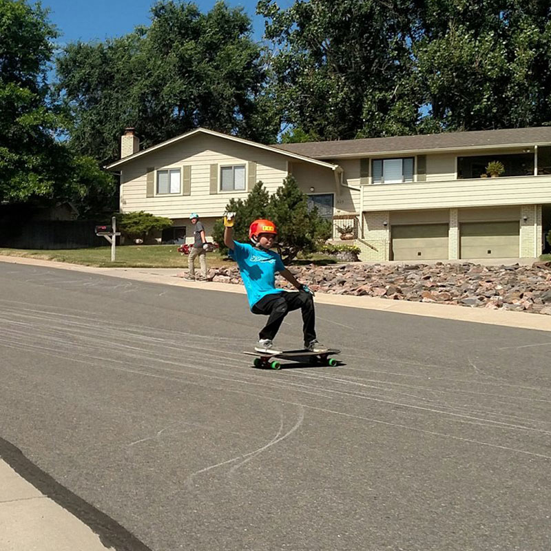

<div id="content">
  <div id="main">
    <div class="container">
      <div class="one_third">
						
      </div>

      <div class="two_third last">
						<h1>Alec Olguin</h1>
						<p><b>MEET ALEC...&nbsp;</b>Hi I am Alec Olguin and I have been skateboarding since I was 5. I am a Colorado Native and find our state offers a lot of challenges in Longboarding and great skate parks. I was first introduced to the sport with a skateboard
							as my birthday gift and immediately picked it up and have enjoyed several hours at the downtown skate park. About 5 years ago my father moved to LOHI and that was my introduction to longboarding, we live real close to Boardlife and I made a daily
							trip to the store to learn everything I could about long boards, trucks, bearings, wheels, riders, gloves, helmets, manufactures, and competition events. I have since become an avid longboarder and enjoy the tight knit community it has created
							throughout our State. I look forward to taking on every hill and expanding my freeride form and satisfying my need for speed in downhill with the best boards, NEVERSUMMER!</p>
						<p><b>ALEC'S FAVORITE NS BOARD IS...</b> Downhill/Freeride: NEVER SUMMER Superfreak paired with Bear Kodiak trucks, NeverSummer wheels, Bear Space Ball bearings.&nbsp;This board is built for all sizes, great for downhill and freeride.&nbsp;Skatepark/Street:
							Never Summer Revival paired with Bear Polar Trucks, holesom holyroller bearings abec 9, bones stf wheels.&nbsp;All subject to change as I always continue to challenge myself and my board to become a better rider.&nbsp;</p>
					</div>


    </div>
  </div>
</div>